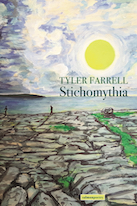

Latest
Stichomythia by Tyler Farrell.
Published February 27, 2018.
- Farrell was included in EATLOCAL :: READLOCAL's Feature Poets 2017 and Friends of Lorine Niedecker's Winter 2017 newsletter.
- For his second year in a row, Farrell is teaching Literature, History and Culture of Ireland, a summer abroad course.
- Farrell is also teaching British and Irish Drama on Stage, a J-Session course in London.
- Read the Marquette University's English department's interview of Farrell from spring of 2016.
- You can find Farrell's latest work in an anthology published by Salmon Poetry, on the website of Wisconsin Fellowship of Poets and in the journal Presence.
- Farrell was featured in a Marquette Wire story about his study abroad courses.
Tyler Farrell was born in Illinois, grew up in Milwaukee, Wisconsin, was educated by the Jesuits at Marquette High School and Creighton University, and by layfolk at the University of Wisconsin-Milwaukee. He teaches writing and literature at Marquette University and currently lives in Madison, Wisconsin with his wife Joan and their two sons.
Photo by Maryam Tunio.
Farrell received his Ph.D. in Creative Writing-Poetry under the direction of Irish-American Poet, James Liddy. Farrell has published poems, such as "The Cathedral / Basilica of Saint Louis, King of France", The Truth of Angels and Ravens, "Milwaukee Afterparty I Should Have Avoided." and Three Family Rummage.
Furthermore, Farrell has written essays and reviews in many periodicals and anthologies. Three publications include: Austin Clarke and the Consolations of Irish Catholicism (New Hibernia Review, 2005), The Book of Irish American Poetry (University of Notre Dame Press, 2007) and St. Peter’s B-List: Contemporary Poems Inspired by the Saints (Ave Maria Press, 2014).
Farrell also wrote a biographical essay for James Liddy’s Selected Poems (Arlen House, 2011) and has two collections of poems published with Salmon Poetry (County Clare, Ireland): Tethered to the Earth (2008) and The Land of Give and Take (2012).